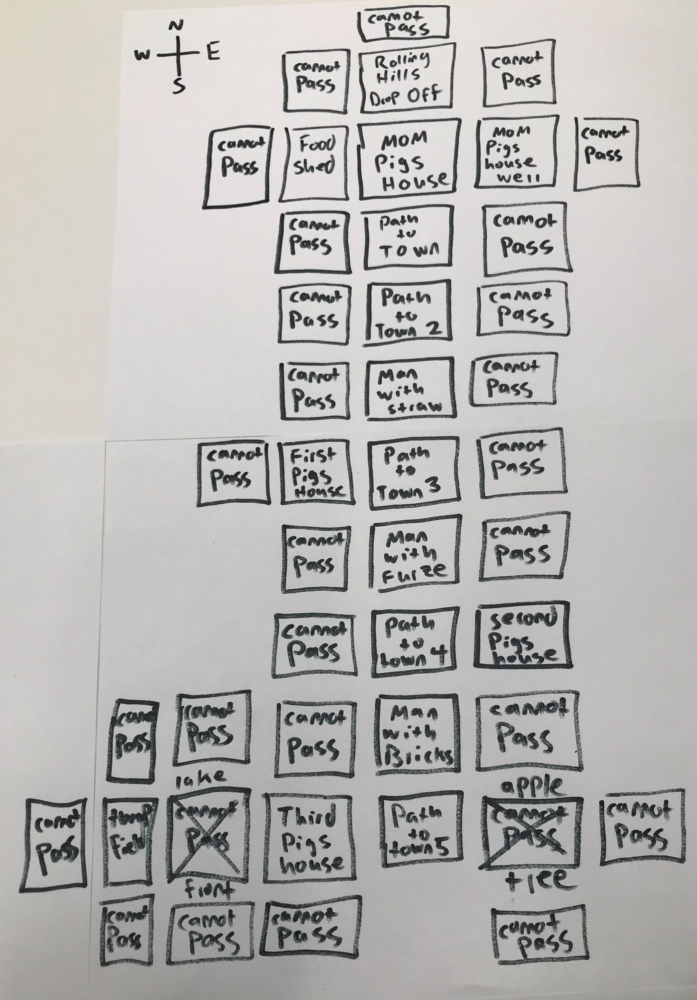

Since we put the Lake Front to the West of the Third Pigs House we should put the Apple Tree to the East. We are going to change the Cannot Pass box to the east of Path to Town 5 into the Apple Tree. That way its close enough for it to make sense for the Third Pig to have run all the way home after throwing an apple far.

Now we will block off all the other areas, including the area South of the Third Pigs House.
Now the only way we can go is To Town, which is where the Fair is. We are on the right track!
We are now done with the sixth Key Point!